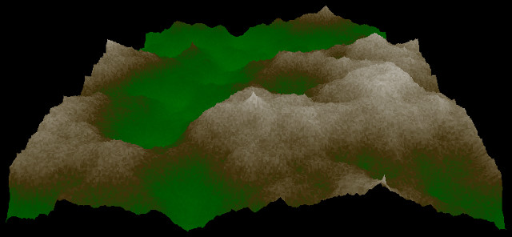
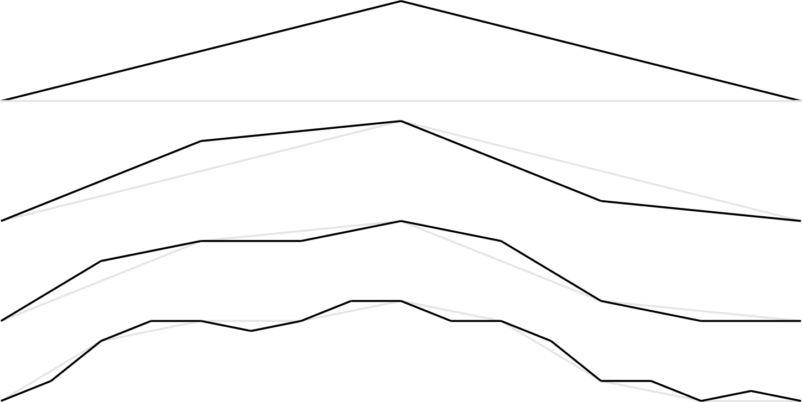
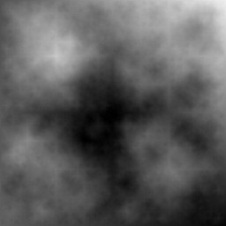
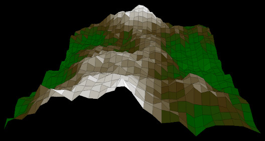

Adventi naptár
Fraktál tájképek és 3D rajzolás
Tetszik ez a hegy? Remélhetőleg igen, mert ilyeneket fog rajzolni a mai program. Ehhez két dolgot kell csinálnia:
- egy domborzati térképet kell generálnia, és
- kirajzolni a térkép alapján megalkotott görbe felületet.
1A fraktál tájképek
A teknőcgrafika kapcsán láttuk, hogy némely fraktálok úgy alakíthatók ki, hogy egy alakzatot minden lépésben bonyolítunk egy kicsit. Lehet egy ötletünk ezzel kapcsolatban: vigyünk be egy kis véletlenszerűséget ebbe a lépésbe! Az alábbi rajzon egy egyszerű szakasz látható, amelyet ilyen módon bonyolítunk. Minden egyes lépésben fogjuk a szakaszt vagy szakaszokat, és azoknak középpontját eltoljuk felfelé vagy lefelé véletlenszerűen, kettétörve ezzel azokat. A véletlenszerű eltolás mértékét pedig aszerint csökkentjük, hogy mekkora szakaszt felezünk. Az elején még nagyokat ugrunk, aztán egyre kisebbeket. Látható, hogy így egy hegy alakul ki:  
Nem kell mást tennünk, mint azt, hogy ezt általánosítanunk két dimenzióra, és már kész is a domborzati térkép. Egyik adventi bejegyzésben már történt hasonló dolog: a „plazma fraktálnak” csúfolt algoritmus éppen ezt csinálta. Annyi hiányossággal, hogy nem túl szépen tette ezt: az ábrán vízszintes és függőleges vonalak ismerhetőek fel, látszik rajta, hogy a generáló algoritmus vízszintesen és függőlegesen haladva átlagolja és tolja el a színeket. (A színek jelentik itt a szakasz y koordinátáját, az átlagolás pedig a szakasz kettéosztását: a szakasz két széle végpontjának y koordinátáit átlagolva a közepének y koordinátáját kapjuk.)
Egy ügyes trükkel azonban lehet ezen segíteni. Ezt a trükköt a gyémánt–négyzet algoritmus (diamond-square algorithm) valósítja meg. Működését nagyon könnyű megérteni az alábbi rajzok alapján.
Az eredeti, hibás algoritmus úgy működött, hogy minden négyzet (négy szomszédos kék pötty) által közrezárt középső, zölddel jelölt pont színét a négy pont színének átlagából számolta ki, azt egy kis véletlenszámmal módosítva. Az egyes kék pontok közötti pirossal jelölt pontok színét pedig egyszerűen azokat átlagolva. Ezért alakultak ki a vízszintes-függőleges mintázatok, mert a pirossal jelölt pontok színét csak a vízszintes-függőleges szomszédaik alapján számolta az algoritmus.
A javított változat ezzel szemben így gondolkozik: számoljuk ki a zölddel jelölt pontok színét az előbbi módon, azonban ezek után a pirossal jelölt pontok színét pedig határozzuk meg úgy, hogy azok függjenek a most generált zöld pontoktól is! A zöld pontok kiszámolását nevezik a „négyzet lépésnek”, mivel a zöld pontok színét meghatározó kék pontok négyzet alakban helyezkednek el. A piros pontok kiszámolása pedig a „gyémánt lépés”, mert minden piros pontot meghatározó kék pontok (felette, alatta) és zöld pontok (tőle balra, jobbra) gyémánt alakban helyezkednek el. Mintha az egész ábrát elforgatnánk 45 fokkal a gyémánt lépés idejére, és úgy átlagolnánk a négyzet alakban elhelyezkedő pontokat. Alább látható egy fraktál, amelyet az így javított algoritmus generált. Látható, hogy ebben már nincsenek meg az előbbiben halványan még felfedezhető vízszintes és függőleges csíkok.
Na és hogy lesz ebből hegy? Egyszerűen! A generált számokat magasságértékeknek és színeknek is használjuk. A legkisebb, -1 körüli számok az alacsony magasságot jelzik, és kék színt kapnak (az lesz a hegyi tó). Utána egy hirtelen átmenettel a zöld jön, aztán a barna, és végül a fehér. A legmagasabb, +1 körüli helyeken lesz a fehér a hó színe.
A szélső pontok problémásak még az algoritmus szempontjából. A bal szélső piros pontnak (lásd az előbbi ábrát) például nincsen bal oldali zöld szomszédja, amely meghatározná a színét. Nagyban leegyszerűsíthetjük a programunkat, ha a peremek külön esetként kezelése helyett a kép másik oldalán lévő pontokat tekintjük szomszédoknak. (Ezt biztosan sokan csináltátok, akik életjátékot írtatok a nagyháziban.) Például ha a kép 256 képpont széles, akkor a 255-ös pont jobb oldali szomszédjának a 255+1 = 256 → 0-s pontot vesszük. Ha a kép mérete kettő valamely hatványa, ezt egy egyszerű bitenkénti és művelet megoldja mindkét irányban, pozitív és negatív „túlindexelés” esetén is. Egy 256×256-os térkép esetén:
enum { MERET = 1<<8 }; /* legyen 2 hatvanya! */
typedef double Magassag[MERET][MERET];
A térkép egy adott pontján a magasságot beállító, és a magasságot lekérdező függvény:
/* beallitja az adott koordinatan a magassagot.
* x es y ket oldalt "tulpordul" */
void beallit(Magassag k, int x, int y, double szin) {
if (szin < -1) szin = -1;
if (szin > +1) szin = +1;
k[y & (MERET - 1)][x & (MERET - 1)] = szin;
}
/* kiolvassa a magassagterkeprol az adott koordinatat.
* x es y koordinata a ket oldalt "tulpordul" */
double magassag(Magassag k, int x, int y) {
return k[y & (MERET - 1)][x & (MERET - 1)];
}
Ez figyelembe veszi a magasságot megadó szám korlátait is: -1 lesz a legmélyebb völgy, +1 a legmagasabb hegy, és valós számokat használunk. A két szélen körbeforduló számítás miatt a generált fraktál csempézhető is: több darabját egymás mellé rakva a széleken folytonos átmeneteket kapunk.
Egy négyzet lépés így végezhető el:
/* negyzet alaku atlagolas. az x, y a cel koordinata, a
* meret azt mondja meg, hogy mekkora negyzetbol vegye az atlagot */
void negyzet(Magassag k, int x, int y, int meret, double maxelteres) {
int fel = meret / 2;
double a = magassag(k, x - fel, y - fel);
double b = magassag(k, x + fel, y - fel);
double c = magassag(k, x - fel, y + fel);
double d = magassag(k, x + fel, y + fel);
beallit(k, x, y, (a + b + c + d)/4.0 + frand()*maxelteres);
}
Ennek megadjuk a kiszámolandó pont koordinátáit (x, y), és annak a négyzetnek a méretét (meret), amelyen belül
az átlagolást el kell végeznie. A maxeltérés paraméter adja meg a legnagyobb véletlenszerű
eltolást, amit csinál. (Az frand() függvényünk -1 és +1 közötti véletlenszámot generál.)
Látszik, hogy ez már nem foglalkozik a kép széleivel: feltételezi, hogy a magassag()
és a beallit() függvénye helyesen kezelik azt. A gyémánt lépés a fentihez hasonlóan működik.
A térkép generálása pedig úgy működik, hogy egyre kisebb, négyzet alakú területeken
végezzük el előbb a négyzet lépést, utána pedig a gyémánt lépést. A területek méretét a lepes
változó adja meg, amelyet először a kép teljes méretétől indítunk, aztán pedig minden iterációban
felezzük, amíg el nem jutunk az egy képpont méretű lépésig – mert addigra készen is vagyunk:
/* Letrehoz egy uj, veletlenszeru terkepet */
void terkep_general(Magassag k) {
int x, y;
int lepes;
double maxelteres;
beallit(k, 0, 0, 0); /* kiindulopont - legyen mindig kozepmagassag */
/* mindig megfelezve a darabokat, ujabb pontokat generalunk */
for (lepes = MERET, maxelteres = 1; lepes > 1; lepes /= 2, maxelteres /= 2) {
int fellepes = lepes / 2;
/* negyzetek belseje */
for (y = fellepes; y < MERET + fellepes; y += lepes)
for (x = fellepes; x < MERET + fellepes; x += lepes)
negyzet(k, x, y, lepes, maxelteres);
/* gyemantok belseje */
for (y = 0; y < MERET; y += lepes)
for (x = 0; x < MERET; x += lepes) {
gyemant(k, x + fellepes, y, lepes, maxelteres);
gyemant(k, x, y + fellepes, lepes, maxelteres);
}
}
}
Érdekesség, hogy a térkép generálása nem négy meghatározott pontból, hanem egyetlen egy pontból indul. Az első lépése a 256×256-os képen az lesz, hogy elhelyezzen egy véletlenszerű pontot a (0;0) koordinátán, és utána elvégezze az első „négyzet lépést”. Gondolhatnánk, hogy nincsen négy pont, amit ehhez átlagolni lehetne, de van: a (0;0), a (0;256), a (256;0) és a (256;256) pontok. Ne feledjük, a képen minden irányban körbesétálhatunk (jobb oldalt ki, bal oldalt be stb), tehát ezek a pontok léteznek, és átlagolhatóak: tulajdonképpen a (0;0) pontot vesszük négyszer, és azt átlagoljuk. Ezután már valójában is létezik több pont, amit átlagolni lehet.
Az első mai letölthető program a térképet rajzolja ki:
advent19-terkep.c. A szóköz gomb minden megnyomására egy új
fraktált generál. A színátmeneteket előállító függvény a Mandelbrot-fraktálos programból származik.
A kirajzolás előtt végez a képen egy minimum- és maximumkeresést, hogy utána a legkisebb és a legnagyobb
számot „kihúzza” a -1 és +1 értékekhez – így látszik a teljes színpaletta.
Érdemes játszani egy kicsit az algoritmus paramétereivel (a maxeltérés kezdeti értékével és osztójával) a
terkep_general() függvényben, és a színekkel a szineket_kiszamol()
függvényben. Nem csak hegyeket lehet ezzel a programmal rajzolni, hanem például felhőket is.
2A hegy kirajzolása
Térjünk át a háromdimenziós részre – hiszen adott egy magasságérkép, most már csak ki kellene rajzolni a görbe felületet, amely a hegyet adja ki.
Ahhoz, hogy ez szép legyen, a tegnapi drótvázról át kell térnünk kitöltött sokszögekre.
Ehhez egy egyszerű négyzetrácsból indulhatunk ki. Fogjunk meg tehát egy csomó négyzetet, amelyek
az y=0 síkon fekszenek (bal oldali ábra), és toljuk el ezek pontjait függőlegesen
a magasságtérkép szerint (jobb oldali ábra). Bár így már nem négyzetek lesznek, de nem baj,
a hegyet megkapjuk. Ha még színeket is rendelünk az egyes négyszögekhez, már meg is kaptuk azt
a sokszöghalmazt, amelyet ki kell rajzolnunk. Ha van N×N pontunk, (N-1)×(N-1) négyszöget
kell kezelnünk.

Csakhogy a kirajzolás nem olyan egyszerű, mint a drótváznál. Ugyanis nem dobálhatjuk csak fel a négyszögeket a képernyőre tetszés szerinti sorrendben – egyes négyszögek részben vagy teljesen elfedhetnek másik példányokat. A fenti drótváz rajzon például az utolsó előtti sor balról második négyszöge egyáltalán nem látszik. A repülős játéknál már találkoztunk ezzel a problémával. Ott a rossz sorrendű kirajzolás esetén úgy nézett ki, mintha a repülő a fenyőfa alatt ment volna el.
A szép megoldás erre a problémára z-pufferelés (z-buffer) nevű eljárás lenne. Az abból az egyszerű felismerésből indul ki, hogy a keletkező két dimenziós képen minden egyes képpont színét pontosan egy térbeli test határozza meg – mégpedig az, amelyik a legközelebb van abban az irányban. Tehát a sokszögek kirajzolásakor nem kellene mást tennünk, mint minden egyes térbeli sokszögnek megfelelő síkbeli sokszög kirajzolásakor kiszámolni azt is, hogy az egyes kiszínezett képpontok milyen távol vannak a megfigyelőtől, és azt feljegyezni a képpont adata mellé. (Tehát a kép minden pixeléhez tartozik még egy z érték.) Ha közelebbi képpontot kell rajzolni, akkor a rajzolást meg kell tenni, és feljegyezni az új távolságot a képponthoz; ha távolabbit, akkor pedig semmi teendő nincsen.
Az SDL_gfx könyvtárral ezt azonban nem tudjuk megoldani, mert az két dimenzióban számol csak. Helyettesíthetjük viszont egy újabb trükkel: rendezzük kirajzolás előtt távolság szerint csökkenő sorrendbe a sokszögeket! Ha a kirajzolandó négyszögek kicsik és nem metszik egymást, így is szép ábrát fogunk kapni. Márpedig a négyszögeink kicsik és nem metszik egymást. (Mindenki átgondolhatja maga, hogy a két feltétel közül melyik miért fontos.)
Az adatszerkezet hasonló a drótvázas programéhoz. A Pont struktúra tárolja egy
pont térbeli adatait (eredeti és forgatott koordinátáit, képernyőre leképezett koordinátáit),
a Negyszog pedig négy pontra hivatkozik:
typedef struct Pont {
double x, y, z; /* eredeti 3d koordináta */
double xf, yf, zf; /* forgatott 3d koordináta */
int xk, yk; /* képernyőn koordináta */
} Pont;
typedef struct Negyszog {
Pont *sarkok[4];
Uint32 szin;
} Negyszog;
A kirajzolásnál előbb elforgatjuk irányba az összes pontot, utána rendezzük a négyszögeket távolság szerint, végül pedig elvégezzük a rajzolást:
void kirajzol(Pont pontok[], Negyszog negyszogek[], double fx, double fy) {
int i;
boxRGBA(screen, 0, 0, screen->w, screen->h, 0, 0, 0, 255);
/* forgatott koordináták számolása */
for (i = 0; i < MERET*MERET; ++i) {
Pont p1 = pontok[i];
Pont p2 = { p1.x*cos(fy)-p1.z*sin(fy), p1.y, p1.x*sin(fy)+p1.z*cos(fy) };
Pont p3 = { p2.x, p2.y*cos(fx)-p2.z*sin(fx), p2.y*sin(fx)+p2.z*cos(fx) };
pontok[i].xf = p3.x;
pontok[i].yf = p3.y;
pontok[i].zf = p3.z;
pontok[i].xk = screen->w/2 + 600 * pontok[i].xf / (pontok[i].zf+600);
pontok[i].yk = screen->h/2 - 600 * pontok[i].yf / (pontok[i].zf+600);
}
/* rendezés és kirajzolás */
qsort(negyszogek, (MERET-1)*(MERET-1), sizeof(negyszogek[0]), negyzetrendez);
for (i=0; i<(MERET-1)*(MERET-1); ++i)
negyzet_rajzol(negyszogek[i]);
SDL_Flip(screen);
}
Az összes pont forgatásával a négyszögek „automatikusan” forognak, hiszen a négyszögek
maguk nem tárolnak koordinátákat, hanem csak hivatkoznak a pontokra. Így most is megúszunk
egy csomó számítást, mivel egy pont négy négyszöghöz is tartozik. A felesleges számításokat
pedig jobb kerülni, mert itt már tényleg olyan dolgot csinálunk, amit nem a gép központi
processzorával kellene csináltatni, hanem a grafikus kártyával. Nem véletlen a qsort()
választása. A szélsőértékkereséses vagy a buborékrendezés erre már alkalmatlan. (Ezt is kipróbálhatja
mindenki: a gyorsrendezést a programban egy szélsőértékkereséses rendezésre cserélve
használhatatlanul lassúvá válik az egész.) Ez nagyon fontos, mert egy 256×256-os térkép azt jelenti,
hogy kb. 65000 négyszögünk van. Ha O(n2/2) időben futó rendezést használunk, az
kb. 2 milliárd összehasonlítást jelent! Ha O(n×logn) időben futót, az csak 1 milliót. (Ezt
is érdemes kipróbálni! Az összehasonlító függvénybe kell tenni egy sort, amely egy globális
változót megnövel eggyel. A qsort() hívás előtt lenullázva azt a változót, ellenőrizhető,
hogy hányszor hívódott az összehasonlító függvény.)
Az adatszerkezetet a hegy_general() építi föl:
/* uj hegyet general. ehhez keszit egy uj terkepet, es abbol kiindulva
* meghatarozza a magassagokat */
void hegy_general(Pont *pontok, Negyszog *negyszogek, SDL_Color pal[]) {
Magassag *k;
int x, y;
/* itt most ilyen furcsan foglalodik a 2d tomb, egyszerre. */
/* csak azert kell igy, mert ha tul nagy, nem fer a verembe! */
k = (Magassag *) malloc(sizeof(Magassag));
terkep_general(*k);
for (y = 0; y < MERET; ++y)
for (x = 0; x < MERET; ++x) {
int i = y*MERET + x;
pontok[i].x = 500 * (x / (double)MERET - 0.5);
pontok[i].y = 128 * ((*k)[y][x]) - 32;
pontok[i].z = 500 * (y / (double)MERET - 0.5);
}
for (y = 0; y < MERET-1; ++y)
for (x = 0; x < MERET-1; ++x) {
int i = y*(MERET-1) + x;
int c = (magassag(*k, x, y) + frand()/32)*127+128;
if (c < 0) c = 0;
if (c > 255) c = 255;
negyszogek[i].sarkok[0] = &pontok[y*MERET+x];
negyszogek[i].sarkok[1] = &pontok[y*MERET+x+1];
negyszogek[i].sarkok[2] = &pontok[(y+1)*MERET+x+1];
negyszogek[i].sarkok[3] = &pontok[(y+1)*MERET+x];
negyszogek[i].szin = pal[c].r<<24 | pal[c].g<<16 | pal[c].b<<8 | 0xFF;
}
}
Ez a pontok x (vízszintes) és z (távolság) koordinátáit a rácspontok
szerint határozza meg, y (függőleges) koordinátáját pedig a kapott hegy magasságai
szerint. A négyszögek csúcsait pedig a szomszédos pontokra állítja be (x és x+1,
illetve y és y+1), figyelve arra a sorfolytonosra lapított kétdimenziós
tömbnél, hogy míg a pontok tömbje MERET széles, a négyzeteké csak MERET-1
szélességű. A négyszög színét is a magasság határozza meg – egy kis véletlenszámot még hozzáad,
egyszerűen csak azért, mert így szebb lesz a rajz. (A tavaknál ez kicsit bekavar – szorgalmi
feladat kijavítani.)
A kész program letölthető innen: advent19-hegy.c. A hegyet
forgatni a nyilakkal lehet, új domborzati térképet generálni pedig a szóközzel. Aki meg szeretné
izzasztani a gépét, kipróbálhatja, hogy néz ki egy 256 pont (MERET = 1<<8) által meghatározott hegy,
vagy egy 512 (MERET = 1<<9) által meghatározott.
A program módosított változata, az advent19-trip.c varázsszőnyeget rajzol ki. Aztán hamarosan majd a levegő is fog hullámozni – de arra még egy kicsit rá kell pihenni. Holnap játék!